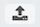

Once you know how to access to your Metavisitor Galaxy instance with a web browser and are able to perform basic start/stop/restart operations, there is still some work needed to import and configure reference data (reference genomes and databases) so that they are directly available to all Galaxy users for running tools and workflows.
Here we provide the step-by-step description of what we did to prepare our Metavisitor instance before performing the analyses described here.
1. Connect to your Metavisitor Galaxy admin account with your web browser
2. Import reference data in an history "References"
At first, you need to import and prepare the reference datasets you will need for most of the Metavisitor analyses. As a Galaxy admin you will make latter some of these references directly accessible to the Galaxy tools, and/or accessible to any other users by putting them in a Galaxy public library.
a. Preliminary actions
- Click on the
Analyze Datamenu - rename the
Unnamed historytoReferences
b. Upload nucleotide vir2 fasta file
- Click on the  button on top of the tool bar (left handside of the Galaxy interface)
- In the open window, click on the
Rule-basedtab - Make sure "Upload data as:" is set to datasets and "Load tabular data from:" is set to Pasted Table
- Copy - paste the following table (not including the header)
| Name | URL |
|---|---|
nucleotide vir2 |
https://ndownloader.figshare.com/files/11005121 |
protein vir2 |
https://ndownloader.figshare.com/files/11005124 |
dm6 |
ftp://ftp.flybase.net/genomes/Drosophila_melanogaster/dmel_r6.10_FB2016_02/fasta/dmel-all-chromosome-r6.10.fasta.gz |
AgamP4 |
https://www.vectorbase.org/sites/default/files/ftp/downloads/Anopheles-gambiae-PEST_CHROMOSOMES_AgamP4.fa.gz |
P. berghei |
ftp://ftp.ensemblgenomes.org/pub/release-28/protists/fasta/plasmodium_berghei/dna/Plasmodium_berghei.May_2010.28.dna_sm.genome.fa.gz |
hg38 |
ftp://ftp.ensembl.org/pub/release-84/fasta/homo_sapiens/dna/Homo_sapiens.GRCh38.dna.primary_assembly.fa.gz |
- Click on the
Buildbutton on the bottom right - Click on the
+ Rulesbutton on the bottom left
- Select
Add / Modify Column Definitionsfrom the list - Click the
+ Add Definitionbutton, then selectNamefrom the list and set column "A" as Name column - Click the
+ Add Definitionbutton, selectURLand set the "B" column as URL column - Click the
Applybutton. Finally click theUploadbutton in the bottom right
The reference genomes should be uploaded shortly to Galaxy.
3. Prepare Blast databases
- Use the tool
NCBI BLAST+ makeblastdb
| What to set in each form field for | nucleotide vir2 | protein vir2 |
|---|---|---|
| Molecule type of input | nucleotide | protein |
| Input FASTA files(s) | dataset 1 (nucleotide vir2) | dataset 2 (protein vir2) |
| Title for BLAST database | nucleotide vir2 blastdb | protein vir2 blastdb |
- Leave the rest of the form unchanged and click the
Executebutton - Rename the generated datasets "nucleotide vir2 blast database" and "protein vir2 blast database" for clarity
4. Creating Galaxy dbkey and fasta references accessible to tools for every user
Be sure that the References history is selected in the background, otherwise the uploaded genomes will not be available.
- Go to the
adminpanel - Click
Local datain the left menu - Select the
Create DBKey and Reference Genomein the "Data Managers" table
| What to set in each form field for | nucleotide vir2 | dm6 | AgamP4 | hg38 |
|---|---|---|---|---|
| Use existing dbkey or create a new one | New | New | New | New |
| dbkey | vir2 | dm6 | AgamP4 | hg38 |
| Choose the source for the reference genome | History | History | History | History |
| FASTA file | nucleotide vir2 | dm6 | AgamP4 | hg38 |
- Leave the rest of the fields empty and click the
Executebutton
Tip: Once you have run the first job. You can expand the new dataset that appeared in
your history and click on the  button, instead of going back to
the admin panel.
button, instead of going back to
the admin panel.
5. Creating Galaxy bowtie indexes accessible to tools for every user
Now we are going to generate the bowtie indexes using another data manager tool.
- Go to the
adminpanel - Click
Local datain the left menu - Select the
Bowtie index builderin the "Data Managers" table - Select "vir2" in the "Source FASTA Sequence"
- Leave the other options empty and click the
Executebutton - Expand the "bowtie index" dataset that appeared in your history and click the button
- Repeat the previous 3 steps for "dm6", "AgamP4" and "hg19"
Note that the preparation of bowtie indexes can be long (several hours for the vir2 bowtie index for instance)
6. Creating Galaxy bowtie2 indexes accessible to tools for every user
Finally, we are going to generate the bowtie2 indexes using another data manager tool.
- Go to the
adminpanel - Click
Local datain the left menu - Select the
Bowtie2 index builderin the "Data Managers" table - Select "vir2" in the "Source FASTA Sequence"
- Leave the other options empty and click the
Executebutton - Expand the "bowtie index" dataset that appeared in your history and click the button
- Repeat the previous 3 steps for "AgamP4" and "hg19"
Note that the preparation of bowtie2 indexes can be long too (several hours for the vir2 bowtie2 index for instance)